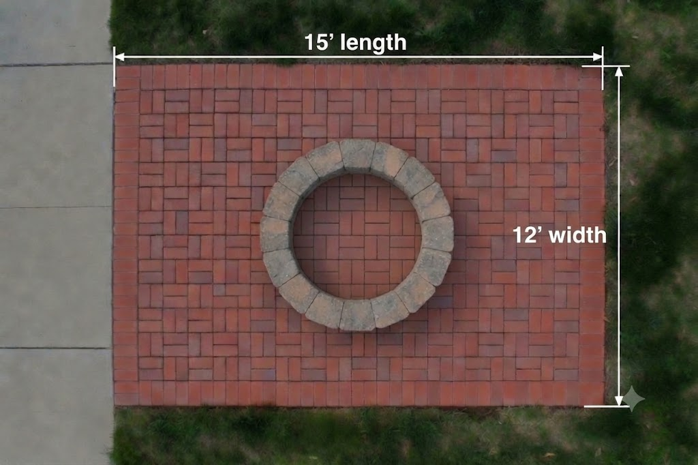
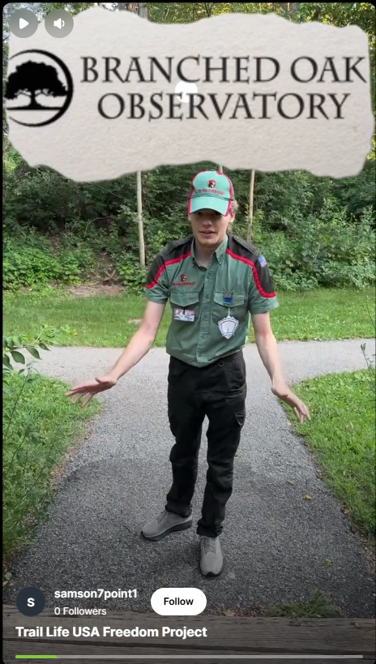

Hello, my name is Elijah Wick. I am an Adventurer with
Trail Life USA Troop NE-0812 and I live in the Millard area of Omaha.
For my TLUSA Freedom Project (comparable to an Eagle Scout project), I have volunteered
to build a 12′×15′ brick patio and fire pit for the Branched Oak
Observatory in St. Raymond (near Lincoln), but to succeed I will need a lot of help.
I along with other volunteers from my troop will be providing the labor, but
we will need donations to collect the estimated $4,000 to buy and
transport the materials and rent the equipment needed to do the job right.
Goal: $4,000 for materials, transport & equipment rental

Rendering of the area we intend to build between two of the existing concrete patios.
Branched Oak Observatory
is a non-profit run by astronomy experts which provides a great space for anyone
interested in astronomy to enjoy the grandeur of the heavens far away from the light
pollution of the city.
Stargazers can bring their own telescopes or use one of the many they have onsite.
There are all sorts of other events as well. They have helped me learn and grow closer
to nature and I want to pay it forward by making it even better.

How Can You Donate?
PayPal or Venmo preferred — direct donations can be collected and used immediately.
Please add a note saying “Freedom Project Donation”.
GoFundMe is simpler to use, but funds take a couple of weeks to receive.
Tax Deductible?
Donations made directly to Elijah Wick (or Samson Wick) will not be tax
deductible as we are just private individuals working on a project and not a registered NPO.
Written receipts can be provided upon request. Donations made via GoFundMe ARE
tax deductible. (The only reason GFM is not the preferred method is the amount of time it takes
to get access to the funds.)
Donate Directly To The Observatory?
Donations made directly to Branched Oak Observatory via their own page ARE tax deductible;
however, as of the creation of this web page there is no way during the donation checkout
process to indicate the donation was meant for this project.
If you prefer to donate this way, please follow these steps so the BOO knows what the donation is for:
- Make your donation at:
branchedoakobservatory.com/support-the-boo/
- Email Matthew Anderson (matthew@branchedoakobservatory.com)
- Subject: “Freedom Project - Fire Pit”
- Include the date and amount of your donation